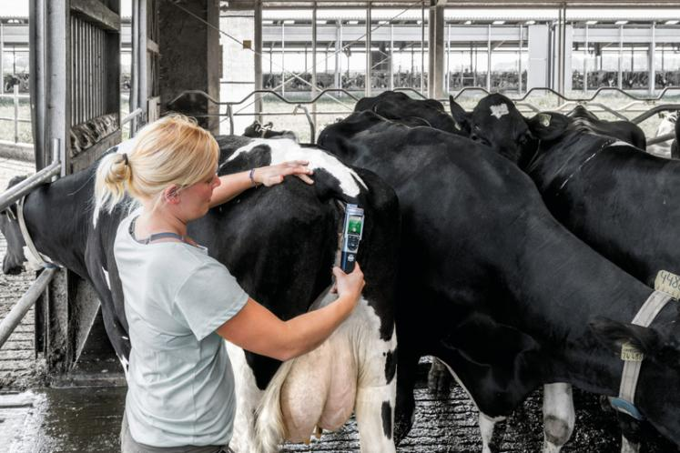

06 sept. 2019
VitalControl combine un thermomètre, un scanner RFID, un écran et un clavier interactif pour la saisie et la visualisation des données de santé animale. Le scanner permet de lire automatiquement les puces des animaux pour leur attribuer la température prise. Avec sa longue pointe flexible, le thermomètre facile la prise de température. Les valeurs mesurées sont visualisables sur des graphiques et générent des alarmes d’animaux à contrôler. Ces données peuvent être transmises, par exemple à son vétérinaire. VitalControl peut être couplé au DAL Urban ou fonctionner de manière autonome.
Article original : Ici